if(!require(pacman))
install.packages("pacman")
pacman::p_load(tidyverse, rpart, rpart.plot, caret,
lattice, sampling, pROC, mlbench)hw-03-01-eshaanmathakari
Classification: Basic Concepts and Techniques
Install packages
The data includes information about various artists, their artworks, and related details, such as their gender, nationality, race, and the museums where their work is counted.
artists <- read_csv("https://raw.githubusercontent.com/rfordatascience/tidytuesday/master/data/2023/2023-01-17/artists.csv")
head(artists)# A tibble: 6 × 14
artist_name edition_number year artist_nationality artist_nationality_other
<chr> <dbl> <dbl> <chr> <chr>
1 Aaron Douglas 9 1991 American American
2 Aaron Douglas 10 1996 American American
3 Aaron Douglas 11 2001 American American
4 Aaron Douglas 12 2005 American American
5 Aaron Douglas 13 2009 American American
6 Aaron Douglas 14 2013 American American
# ℹ 9 more variables: artist_gender <chr>, artist_race <chr>,
# artist_ethnicity <chr>, book <chr>, space_ratio_per_page_total <dbl>,
# artist_unique_id <dbl>, moma_count_to_year <dbl>,
# whitney_count_to_year <dbl>, artist_race_nwi <chr>A tibble is a data structure in R, part of the tidyverse ecosystem, that is designed to make data manipulation and analysis easier and more consistent. It is an enhanced and modern alternative to the traditional data frame in R.
library(tidyverse)
# Convert the artists dataset into a tibble.
as_tibble(artists)# A tibble: 3,162 × 14
artist_name edition_number year artist_nationality artist_nationality_o…¹
<chr> <dbl> <dbl> <chr> <chr>
1 Aaron Douglas 9 1991 American American
2 Aaron Douglas 10 1996 American American
3 Aaron Douglas 11 2001 American American
4 Aaron Douglas 12 2005 American American
5 Aaron Douglas 13 2009 American American
6 Aaron Douglas 14 2013 American American
7 Aaron Douglas 15 2016 American American
8 Aaron Douglas 16 2020 American American
9 Adélaïde Labi… 14 2013 French French
10 Adélaïde Labi… 15 2016 French French
# ℹ 3,152 more rows
# ℹ abbreviated name: ¹artist_nationality_other
# ℹ 9 more variables: artist_gender <chr>, artist_race <chr>,
# artist_ethnicity <chr>, book <chr>, space_ratio_per_page_total <dbl>,
# artist_unique_id <dbl>, moma_count_to_year <dbl>,
# whitney_count_to_year <dbl>, artist_race_nwi <chr># List of columns to be removed
columns_to_remove <- c(
'artist_name'
)
# Remove the specified columns
artists <- select(artists, -one_of(columns_to_remove))
head(artists)# A tibble: 6 × 13
edition_number year artist_nationality artist_nationality_other artist_gender
<dbl> <dbl> <chr> <chr> <chr>
1 9 1991 American American Male
2 10 1996 American American Male
3 11 2001 American American Male
4 12 2005 American American Male
5 13 2009 American American Male
6 14 2013 American American Male
# ℹ 8 more variables: artist_race <chr>, artist_ethnicity <chr>, book <chr>,
# space_ratio_per_page_total <dbl>, artist_unique_id <dbl>,
# moma_count_to_year <dbl>, whitney_count_to_year <dbl>,
# artist_race_nwi <chr>Removing irrelevant columns for prediction: artist_name because the artist’s name itself might not be a strong predictor.
artists <- artists |>
# Convert logical columns to factors with levels 'TRUE' and 'FALSE'.
mutate(across(where(is.logical), factor, levels = c(TRUE, FALSE))) |>
# Convert character columns to factors.
mutate(across(where(is.character), factor))Here we will transform logical columns to factors with specific levels and character columns to factors in a data.
summary(artists) edition_number year artist_nationality artist_nationality_other
Min. : 1.000 Min. :1926 American:908 American:908
1st Qu.: 5.000 1st Qu.:1986 French :870 British :317
Median : 8.000 Median :1996 British :317 French :870
Mean : 8.223 Mean :1994 German :256 German :256
3rd Qu.:12.000 3rd Qu.:2009 Spanish : 94 Other :717
Max. :16.000 Max. :2020 Italian : 74 Spanish : 94
(Other) :643
artist_gender artist_race
Female: 342 American Indian or Alaska Native : 12
Male :2762 Asian : 79
N/A : 58 Black or African American : 83
N/A : 29
Native Hawaiian or Other Pacific Islander: 23
White :2936
artist_ethnicity book
Hispanic or Latino origin : 158 Gardner:1943
Not Hispanic or Latino origin:2946 Janson :1219
NA's : 58
space_ratio_per_page_total artist_unique_id moma_count_to_year
Min. :0.0946 Min. : 1.0 Min. : 0.000
1st Qu.:0.3082 1st Qu.:108.0 1st Qu.: 0.000
Median :0.4093 Median :189.0 Median : 1.000
Mean :0.5301 Mean :201.8 Mean : 4.306
3rd Qu.:0.5941 3rd Qu.:305.8 3rd Qu.: 5.000
Max. :3.7967 Max. :413.0 Max. :64.000
whitney_count_to_year artist_race_nwi
Min. : 0.000 Non-White: 226
1st Qu.: 0.000 White :2936
Median : 0.000
Mean : 1.957
3rd Qu.: 0.000
Max. :40.000
Checking for missing values:
# Check for missing values in the dataset
missing_values <- colSums(is.na(artists))
print(missing_values) edition_number year
0 0
artist_nationality artist_nationality_other
0 0
artist_gender artist_race
0 0
artist_ethnicity book
58 0
space_ratio_per_page_total artist_unique_id
0 0
moma_count_to_year whitney_count_to_year
0 0
artist_race_nwi
0 # Remove rows with missing values
artists <- na.omit(artists)
missing_values <- colSums(is.na(artists))
print(missing_values) edition_number year
0 0
artist_nationality artist_nationality_other
0 0
artist_gender artist_race
0 0
artist_ethnicity book
0 0
space_ratio_per_page_total artist_unique_id
0 0
moma_count_to_year whitney_count_to_year
0 0
artist_race_nwi
0 Decision Trees
Recursive Partitioning (similar to CART) uses the Gini index to make splitting decisions and early stopping (pre-pruning).
library(rpart)Create Tree With Default Settings (uses pre-pruning)
# Build a decision tree with default settings
tree_default <- artists |>
rpart(book ~ ., data = _)
tree_defaultn= 3104
node), split, n, loss, yval, (yprob)
* denotes terminal node
1) root 3104 1219 Gardner (0.6072809 0.3927191)
2) edition_number>=8.5 1303 0 Gardner (1.0000000 0.0000000) *
3) edition_number< 8.5 1801 582 Janson (0.3231538 0.6768462)
6) year< 1988.5 954 372 Gardner (0.6100629 0.3899371)
12) edition_number>=3.5 459 0 Gardner (1.0000000 0.0000000) *
13) edition_number< 3.5 495 123 Janson (0.2484848 0.7515152)
26) year< 1955.5 123 0 Gardner (1.0000000 0.0000000) *
27) year>=1955.5 372 0 Janson (0.0000000 1.0000000) *
7) year>=1988.5 847 0 Janson (0.0000000 1.0000000) *Here we will try to predict whether a particular artist is included in Janson’s History of Art or Gardner’s Art Through the Ages.
library(rpart.plot)
rpart.plot(tree_default, extra = 2)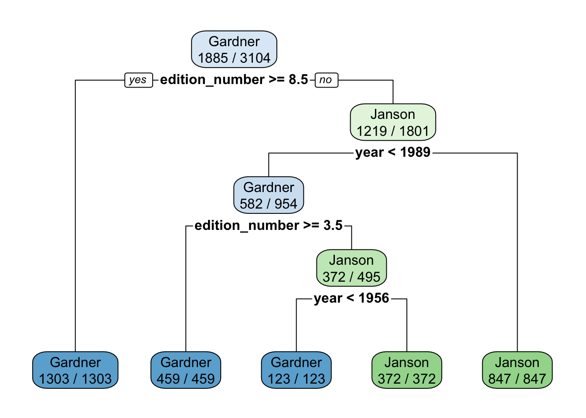
Create a Full Tree
# Build a decision tree
tree_full <- artists |>
rpart(book ~ . , data = _,
control = rpart.control(minsplit = 2, cp = 0))
rpart.plot(tree_full, extra = 2,
roundint=FALSE,
box.palette = list("Gy", "Gn", "Bu", "Bn",
"Or", "Rd", "Pu")) # specify 7 colors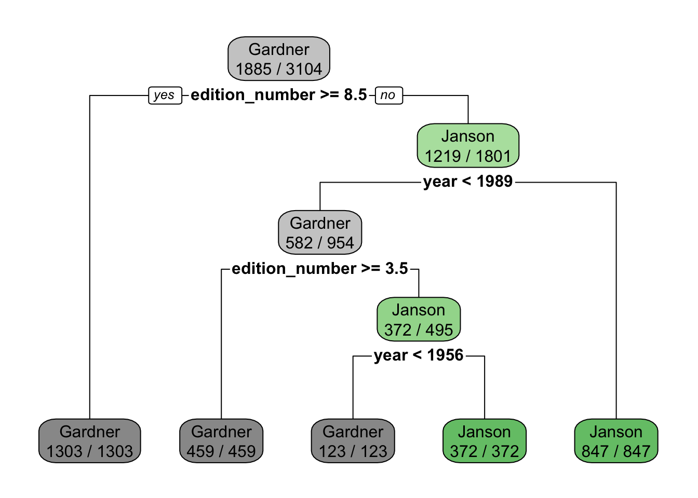
When cp = 0This means that no cost complexity pruning is applied. In other words, the tree is allowed to grow until it perfectly fits the training data, which can result in a very complex, deep, and overfit tree.
tree_fulln= 3104
node), split, n, loss, yval, (yprob)
* denotes terminal node
1) root 3104 1219 Gardner (0.6072809 0.3927191)
2) edition_number>=8.5 1303 0 Gardner (1.0000000 0.0000000) *
3) edition_number< 8.5 1801 582 Janson (0.3231538 0.6768462)
6) year< 1988.5 954 372 Gardner (0.6100629 0.3899371)
12) edition_number>=3.5 459 0 Gardner (1.0000000 0.0000000) *
13) edition_number< 3.5 495 123 Janson (0.2484848 0.7515152)
26) year< 1955.5 123 0 Gardner (1.0000000 0.0000000) *
27) year>=1955.5 372 0 Janson (0.0000000 1.0000000) *
7) year>=1988.5 847 0 Janson (0.0000000 1.0000000) *Training error on tree with pre-pruning Here we are making predictions using a decision tree model (tree_default) on the artists data frame
# Predict book using the decision tree model
predict(tree_default, artists ) |> head () Gardner Janson
1 1 0
2 1 0
3 1 0
4 1 0
5 1 0
6 1 0Predicts the book for each record in the ‘artists’ dataset, which is either “Gardner” (1) or “Janson” (0).
# Predict class labels (Gardner or Janson)
pred <- predict(tree_default, artists , type="class")
head(pred) 1 2 3 4 5 6
Gardner Gardner Gardner Gardner Gardner Gardner
Levels: Gardner JansonBy specifying type = "class", you obtain the class labels that the decision tree model predicts for each observation in the artists data frame.
confusion_table <- with(artists, table(book , pred))
confusion_table pred
book Gardner Janson
Gardner 1885 0
Janson 0 1219The model correctly predicted “Gardner” 1885 times (True Positives) and “Janson” 1219 times (True Negatives). There were no False Positives or False Negatives
# Calculate the total number of correct predictions
correct <- confusion_table |> diag() |> sum()
correct[1] 3104# Calculate the total number of errors
error <- confusion_table |> sum() - correct
error[1] 0accuracy <- correct / (correct + error)
accuracy[1] 1Using a function for accuracy
accuracy <- function(truth, prediction) {
tbl <- table(truth, prediction)
sum(diag(tbl))/sum(tbl)
}
accuracy(artists |> pull(book), pred)[1] 1Training error of the full tree
accuracy(artists |> pull(book),
predict(tree_full, artists, type = "class"))[1] 1Make Predictions for New Data
Making our own artist: Artist in year 2020 with edition number 17.
my_artist <- tibble(edition_number = 17 ,year= 2020,artist_nationality = "American",artist_nationality_other = "Other",artist_gender = "Female",artist_race = "Black or African American",artist_ethnicity = "Not Hispanic or Latino origin", book = NA, space_ratio_per_page_total = 0.5344869907,artist_unique_id = 10,moma_count_to_year = 15,whitney_count_to_year = 5,artist_race_nwi = "Non-White")Fix columns to be factors like in the training set.
# Convert character columns in my_artist to factors
my_artist <- my_artist |>
mutate(across(where(is.character), factor))
my_artist# A tibble: 1 × 13
edition_number year artist_nationality artist_nationality_other artist_gender
<dbl> <dbl> <fct> <fct> <fct>
1 17 2020 American Other Female
# ℹ 8 more variables: artist_race <fct>, artist_ethnicity <fct>, book <lgl>,
# space_ratio_per_page_total <dbl>, artist_unique_id <dbl>,
# moma_count_to_year <dbl>, whitney_count_to_year <dbl>,
# artist_race_nwi <fct>Make a prediction using the default tree
predict(tree_default , my_artist, type = "class") 1
Gardner
Levels: Gardner JansonModel Evaluation with Caret
The package caret makes preparing training sets, building classification (and regression) models and evaluation easier.
library(caret)Set random number generator seed to make results reproducible
set.seed(2000)Hold out Test Data
Test data is not used in the model building process and set aside purely for testing the model. Here, we partition data the 80% training and 20% testing.
# Create a data partition
inTrain <- createDataPartition(y = artists$book, p = .8, list = FALSE)
# Extract the training set
artists_train <- artists |> slice(inTrain)# Extract the testing set
artists_test <- artists |> slice(-inTrain)Learn a Model and Tune Hyperparameters on the Training Data
The package caret combines training and validation for hyperparameter tuning into a single function called train(). It internally splits the data into training and validation sets and thus will provide you with error estimates for different hyperparameter settings.
fit <- artists_train |>
train(book ~ .,
data = _ ,
method = "rpart",
control = rpart.control(minsplit = 2),
trControl = trainControl(method = "cv", number = 10),
tuneLength = 5)
fitCART
2484 samples
12 predictor
2 classes: 'Gardner', 'Janson'
No pre-processing
Resampling: Cross-Validated (10 fold)
Summary of sample sizes: 2236, 2236, 2235, 2236, 2235, 2236, ...
Resampling results across tuning parameters:
cp Accuracy Kappa
0.0000000 1.0000000 1.0000000
0.1298668 0.9605404 0.9188247
0.2597336 0.8111942 0.6354258
0.3896004 0.8111942 0.6354258
0.5194672 0.7009726 0.3035893
Accuracy was used to select the optimal model using the largest value.
The final value used for the model was cp = 0.In this case, the model with cp = 0 was selected as the final model due to its perfect accuracy on the training data.
rpart.plot(fit$finalModel, extra = 2,
box.palette = list("Gy", "Gn", "Bu", "Bn", "Or", "Rd", "Pu"))
# Compute variable importance
varImp(fit)rpart variable importance
only 20 most important variables shown (out of 72)
Overall
edition_number 100.0000
year 79.6051
space_ratio_per_page_total 18.7366
moma_count_to_year 3.7772
artist_raceAsian 1.9624
artist_nationalityJapanese 1.5568
artist_nationalityFrench 1.3456
artist_nationalityMexican 0.4140
artist_nationalityHungarian-French 0.3783
artist_nationalityArgentine 0.0000
artist_nationalityItalian 0.0000
artist_nationality_otherGerman 0.0000
`artist_nationalityN/A` 0.0000
artist_nationalityCzech 0.0000
artist_unique_id 0.0000
`artist_nationalityRussian-French` 0.0000
`artist_nationalitySwiss-German` 0.0000
`artist_raceN/A` 0.0000
`artist_nationalityDanish-French` 0.0000
artist_nationalityRussian 0.0000Here is the variable importance without competing splits.
# Compute variable importance
imp <- varImp(fit, compete = FALSE)
imprpart variable importance
only 20 most important variables shown (out of 71)
Overall
edition_number 100.00
year 53.84
artist_unique_id 0.00
`artist_nationalityPakistani-American` 0.00
artist_nationalityHungarian 0.00
artist_nationalityBelgian 0.00
artist_nationalityPeruvian 0.00
artist_nationalityPolynesian 0.00
artist_nationalityCanadian 0.00
`artist_nationalityHungarian-French` 0.00
artist_nationalityAustralian 0.00
artist_genderMale 0.00
artist_nationalityMexican 0.00
artist_nationalityJapanese 0.00
moma_count_to_year 0.00
`artist_nationalityItalian-American` 0.00
`artist_nationalityGerman-American` 0.00
artist_nationalityAustrian 0.00
artist_nationalityKorean 0.00
artist_nationalityCzech 0.00ggplot(imp)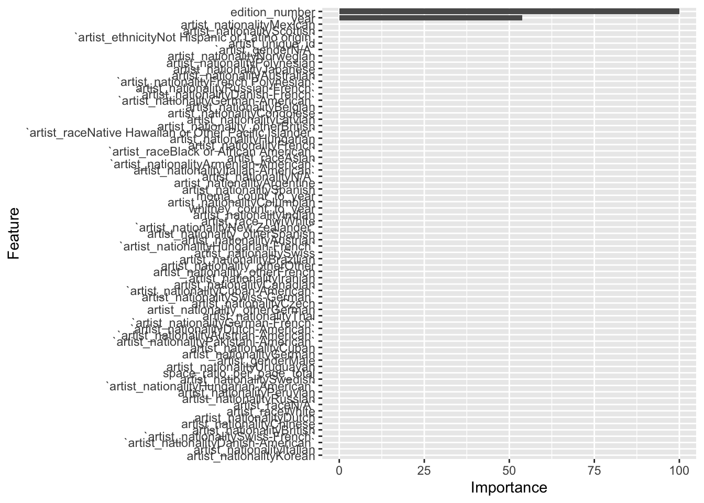
edition_number has the highest importance score, represented as 100.00. year has an importance score of 53.84, indicating it is also a significant predictor. The other predictor variables listed have importance scores of 0.00, suggesting they have little to no impact on the model’s predictive performance.
Testing: Confusion Matrix and Confidence Interval for Accuracy
Use the best model on the test data
# Make predictions on test data
pred <- predict(fit, newdata = artists_test)# Calculate a confusion matrix
confusionMatrix(data = pred,
ref = artists_test |> pull(book))Confusion Matrix and Statistics
Reference
Prediction Gardner Janson
Gardner 377 0
Janson 0 243
Accuracy : 1
95% CI : (0.9941, 1)
No Information Rate : 0.6081
P-Value [Acc > NIR] : < 2.2e-16
Kappa : 1
Mcnemar's Test P-Value : NA
Sensitivity : 1.0000
Specificity : 1.0000
Pos Pred Value : 1.0000
Neg Pred Value : 1.0000
Prevalence : 0.6081
Detection Rate : 0.6081
Detection Prevalence : 0.6081
Balanced Accuracy : 1.0000
'Positive' Class : Gardner
The accuracy is 1.0,Sensitivity (True Positive Rate) and Specificity (True Negative Rate) are also both 1.0, indicating perfect performance.
Model Comparison
We will compare decision trees with a k-nearest neighbors (kNN) classifier. We will create fixed sampling scheme (10-folds) so we compare the different models using exactly the same folds. It is specified as trControl during training.
# Create cross-validation folds
train_index <- createFolds(artists_train$book, k = 10)Build models
# Fit a classification model using the "rpart"
rpartFit <- artists_train |>
train(book ~ .,
data = _,
method = "rpart",
tuneLength = 10,
trControl = trainControl(method = "cv", indexOut = train_index)
)KNN fit:
knnFit <- artists_train |>
train(book ~ .,
data = _,
method = "knn",
preProcess = "scale",
tuneLength = 10,
trControl = trainControl(method = "cv", indexOut = train_index)
)Compare accuracy over all folds.
resamps <- resamples(list(
CART = rpartFit,
kNearestNeighbors = knnFit
))
summary(resamps)
Call:
summary.resamples(object = resamps)
Models: CART, kNearestNeighbors
Number of resamples: 10
Accuracy
Min. 1st Qu. Median Mean 3rd Qu. Max.
CART 1.0000000 1.0000000 1.0000000 1.0000000 1.0000000 1.0000000
kNearestNeighbors 0.9435484 0.9485887 0.9577423 0.9609324 0.9768469 0.9799197
NA's
CART 0
kNearestNeighbors 0
Kappa
Min. 1st Qu. Median Mean 3rd Qu. Max.
CART 1.0000000 1.0000000 1.0000000 1.0000000 1.0000000 1.0000000
kNearestNeighbors 0.8787963 0.8925138 0.9109738 0.9177668 0.9513072 0.9580087
NA's
CART 0
kNearestNeighbors 0library(lattice)
bwplot(resamps, layout = c(3, 1))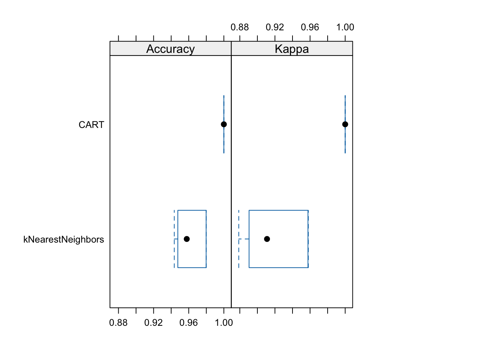
Here “CART achieving perfect accuracy and Kappa, while kNearestNeighbors also has strong performance.
# Calculate the differences in performance metrics between two models
difs <- diff(resamps)
difs
Call:
diff.resamples(x = resamps)
Models: CART, kNearestNeighbors
Metrics: Accuracy, Kappa
Number of differences: 1
p-value adjustment: bonferroni summary(difs)
Call:
summary.diff.resamples(object = difs)
p-value adjustment: bonferroni
Upper diagonal: estimates of the difference
Lower diagonal: p-value for H0: difference = 0
Accuracy
CART kNearestNeighbors
CART 0.03907
kNearestNeighbors 1.754e-05
Kappa
CART kNearestNeighbors
CART 0.08223
kNearestNeighbors 1.852e-05 Feature Selection and Feature Preparation
Decision trees implicitly select features for splitting, but we can also select features manually.
library(FSelector)Univariate Feature Importance Score
These scores measure how related each feature is to the class variable. For discrete features (as in our case), the chi-square statistic can be used to derive a score.
weights <- artists_train|>
chi.squared(book ~ ., data = _) |>
as_tibble(rownames = "feature") |>
arrange(desc(attr_importance))
weights# A tibble: 12 × 2
feature attr_importance
<chr> <dbl>
1 year 0.831
2 edition_number 0.692
3 space_ratio_per_page_total 0.299
4 artist_nationality 0.241
5 artist_race 0.131
6 artist_race_nwi 0.0976
7 artist_nationality_other 0.0435
8 artist_ethnicity 0.0388
9 artist_gender 0.0280
10 artist_unique_id 0
11 moma_count_to_year 0
12 whitney_count_to_year 0 Provides insight into the importance of each feature in predicting the book categories and can help in feature selection or understanding which features are most relevant in the classification task.
ggplot(weights,
aes(x = attr_importance, y = reorder(feature, attr_importance))) +
geom_bar(stat = "identity") +
xlab("Importance score") +
ylab("Feature")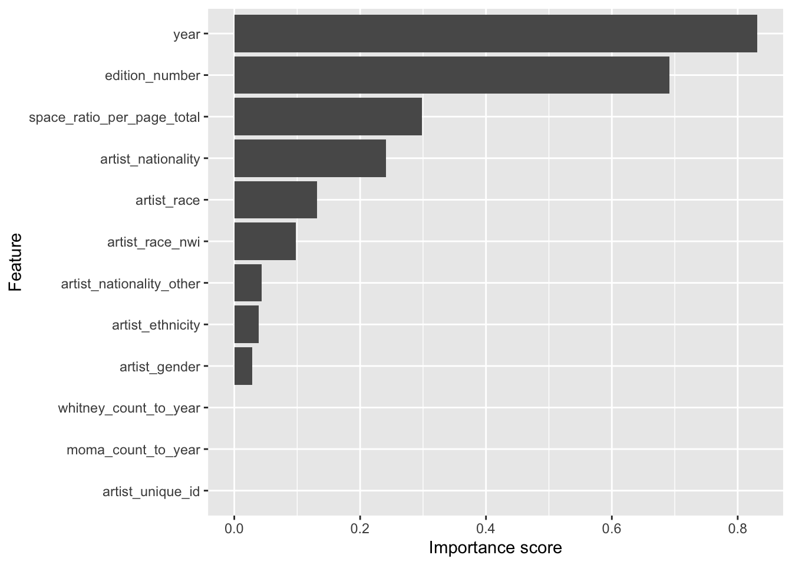
year has the highest importance score , indicating that it is a significant predictor and ‘edition_number’ follows with a relatively high importance score.
subset <- cutoff.k(weights |>
column_to_rownames("feature"), 5)
subset[1] "year" "edition_number"
[3] "space_ratio_per_page_total" "artist_nationality"
[5] "artist_race" Getting the 5 best features Use only the best 5 features to build a model (Fselector provides as.simple.formula)
f <- as.simple.formula(subset, "book")
fbook ~ year + edition_number + space_ratio_per_page_total + artist_nationality +
artist_race
<environment: 0x109907388>“year,” “edition_number,” “space_ratio_per_page_total,” “artist_nationality,” and “artist_race.” are used as predictors in the modeling or analysis of the “book” variable.
m <- artists_train |> rpart(f, data = _)
rpart.plot(m, extra = 2, roundint = FALSE)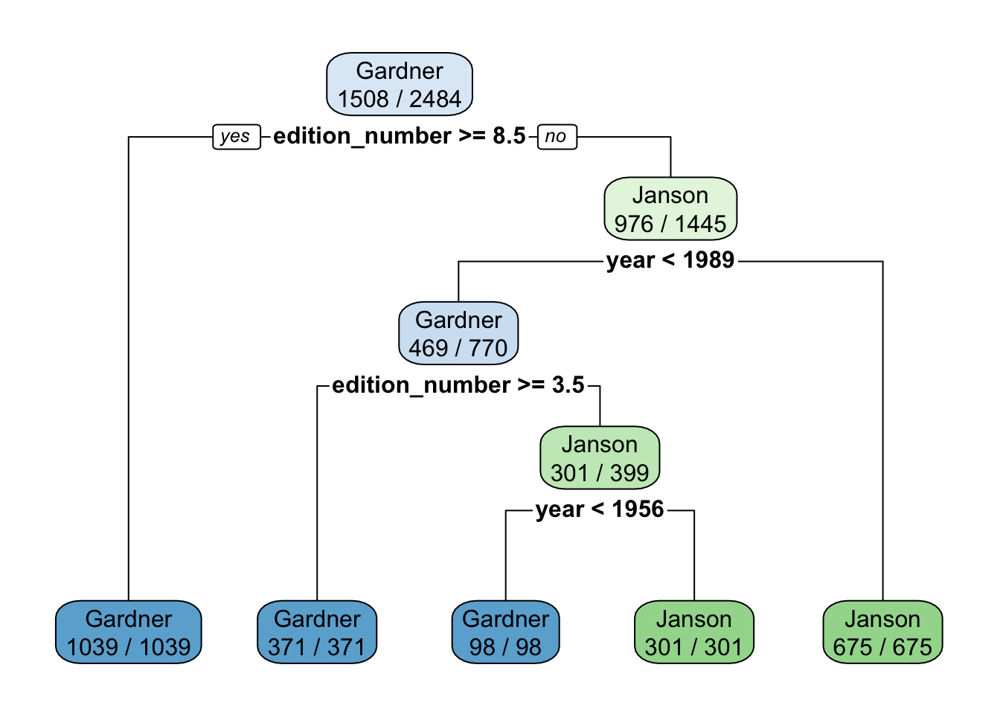
artists_train |>
gain.ratio(book ~ ., data = _) |>
as_tibble(rownames = "feature") |>
arrange(desc(attr_importance))# A tibble: 12 × 2
feature attr_importance
<chr> <dbl>
1 edition_number 0.353
2 year 0.188
3 space_ratio_per_page_total 0.0476
4 artist_race 0.0466
5 artist_race_nwi 0.0254
6 artist_nationality 0.0160
7 artist_ethnicity 0.00408
8 artist_gender 0.00115
9 artist_nationality_other 0.000592
10 artist_unique_id 0
11 moma_count_to_year 0
12 whitney_count_to_year 0 Feature Subset Selection
Often features are related and calculating importance for each feature independently is not optimal.
artists_train |>
cfs(book ~ ., data = _)[1] "edition_number" "year" edition_number and year are the two predictor variables selected by the CFS method.
Black-box feature selection uses an evaluator function (the black box) to calculate a score to be maximized. We define an evaluation function that builds a model given a subset of features and calculates a quality score.
evaluator <- function(subset) {
model <- artists_train|>
train(as.simple.formula(subset, "book"),
data = _,
method = "rpart",
trControl = trainControl(method = "boot", number = 5),
tuneLength = 0)
results <- model$resample$Accuracy
cat("Trying features:", paste(subset, collapse = " + "), "\n")
m <- mean(results)
cat("Accuracy:", round(m, 2), "\n\n")
m
}features <- artists_train |> colnames() |> setdiff("type")Using Dummy Variables for Factors
Nominal features (factors) are often encoded as a series of 0-1 dummy variables. First we use the original encoding of type as a factor with several values.
tree_predator <- artists_train |>
rpart(artist_nationality ~ book, data = _)
rpart.plot(tree_predator, extra = 2, roundint = FALSE, box.palette="Blues")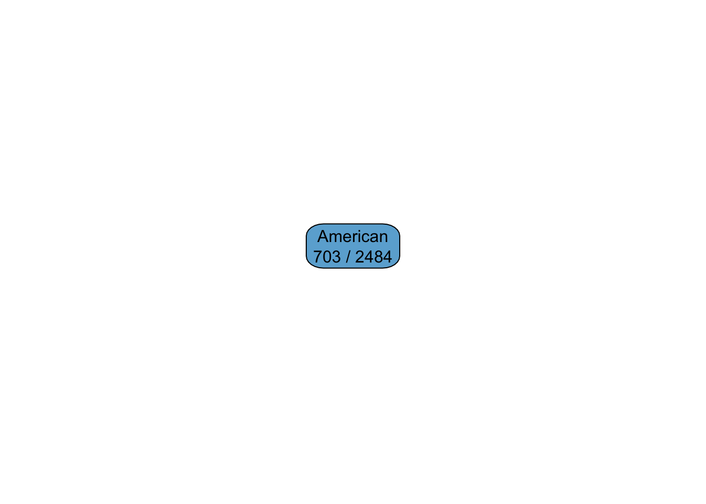
Convert type into a set of 0-1 dummy variables using class2ind.
artists_train_dummy <- as_tibble(class2ind(artists_train$book)) |>
mutate(across(everything(), as.factor)) |>
add_column(artist_nationality = artists_train$artist_nationality)
artists_train_dummy# A tibble: 2,484 × 3
Gardner Janson artist_nationality
<fct> <fct> <fct>
1 1 0 American
2 1 0 American
3 1 0 American
4 1 0 American
5 1 0 French
6 1 0 French
7 1 0 French
8 1 0 French
9 1 0 French
10 1 0 French
# ℹ 2,474 more rowstree_artist_nationality <- artists_train_dummy |>
rpart(artist_nationality ~ .,
data = _,
control = rpart.control(minsplit = 2, cp = 0.01))
rpart.plot(tree_artist_nationality, roundint = FALSE, box.palette = list("Gy", "Gn", "Bu", "Bn", "Or", "Rd", "Pu"))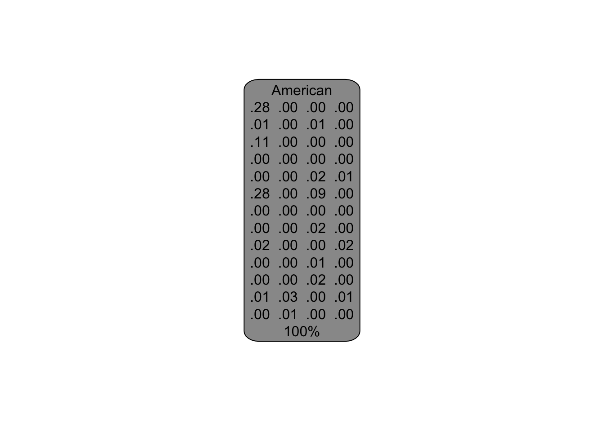
fit <- artists_train |>
train(artist_race_nwi ~ book,
data = _,
method = "rpart",
control = rpart.control(minsplit = 2),
tuneGrid = data.frame(cp = 0.01))
fitCART
2484 samples
1 predictor
2 classes: 'Non-White', 'White'
No pre-processing
Resampling: Bootstrapped (25 reps)
Summary of sample sizes: 2484, 2484, 2484, 2484, 2484, 2484, ...
Resampling results:
Accuracy Kappa
0.9466562 0
Tuning parameter 'cp' was held constant at a value of 0.01rpart.plot(fit$finalModel, extra = 2)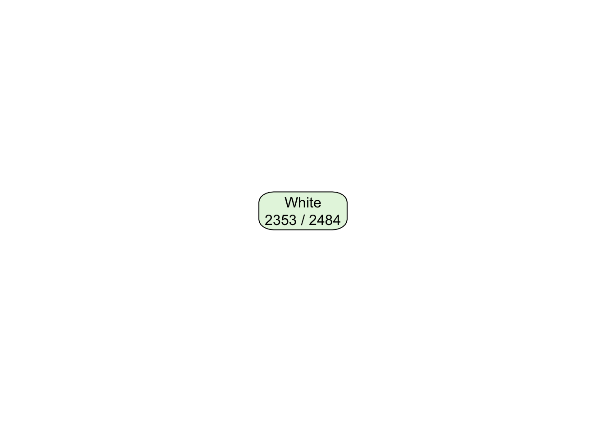
Class Imbalance
Classifiers have a hard time to learn from data where we have much more observations for one class (called the majority class). This is called the class imbalance problem.
library(rpart)
library(rpart.plot)Class distribution
ggplot(artists, aes(y = book)) + geom_bar()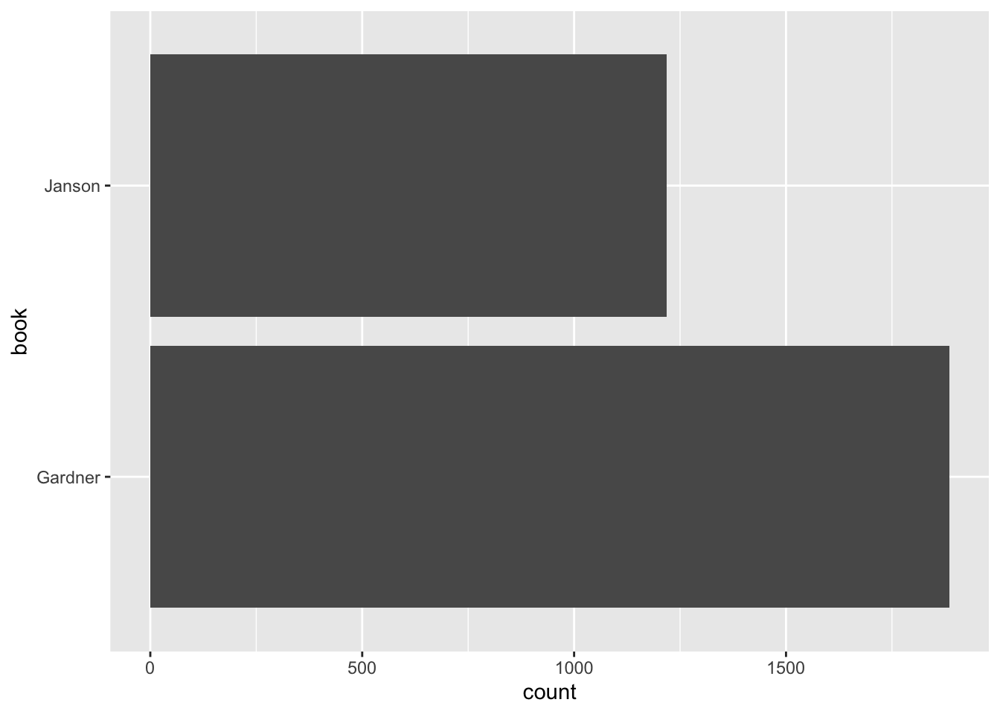
We already have a imbalanced problem as you can see Gardner instances are more that the Janson
Create test and training data. I use here a 50/50 split.
set.seed(1234)
inTrain <- createDataPartition(y = artists$book, p = .5, list = FALSE)
training_artists <- artists |> slice(inTrain)
testing_artists <- artists |> slice(-inTrain)Option 1: Use the Data As Is and Hope For The Best
fit <- training_artists |>
train(book ~ .,
data = _,
method = "rpart",
trControl = trainControl(method = "cv"))fitCART
1553 samples
12 predictor
2 classes: 'Gardner', 'Janson'
No pre-processing
Resampling: Cross-Validated (10 fold)
Summary of sample sizes: 1397, 1398, 1398, 1398, 1397, 1398, ...
Resampling results across tuning parameters:
cp Accuracy Kappa
0.09672131 0.9774194 0.9539383
0.17786885 0.8712159 0.7489398
0.54754098 0.7057858 0.3113405
Accuracy was used to select the optimal model using the largest value.
The final value used for the model was cp = 0.09672131.rpart.plot(fit$finalModel, extra = 2)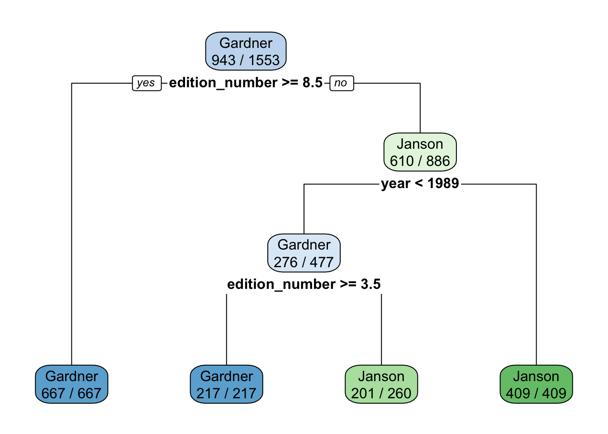
confusionMatrix(data = predict(fit, testing_artists),
ref = testing_artists$book, positive = "Janson")Confusion Matrix and Statistics
Reference
Prediction Gardner Janson
Gardner 878 0
Janson 64 609
Accuracy : 0.9587
95% CI : (0.9476, 0.9681)
No Information Rate : 0.6074
P-Value [Acc > NIR] : < 2.2e-16
Kappa : 0.9151
Mcnemar's Test P-Value : 3.407e-15
Sensitivity : 1.0000
Specificity : 0.9321
Pos Pred Value : 0.9049
Neg Pred Value : 1.0000
Prevalence : 0.3926
Detection Rate : 0.3926
Detection Prevalence : 0.4339
Balanced Accuracy : 0.9660
'Positive' Class : Janson
Option 2: Balance Data With Resampling
We use stratified sampling with replacement (to oversample the minority/positive class).
library(sampling)
set.seed(1000) # for repeatability
id <- strata(training_artists, stratanames = "book", size = c(50, 50), method = "srswr")
training_artists_balanced <- training_artists |>
slice(id$ID_unit)
table(training_artists_balanced$book)
Gardner Janson
50 50 fit <- training_artists_balanced |>
train(book ~ .,
data = _,
method = "rpart",
trControl = trainControl(method = "cv"),
control = rpart.control(minsplit = 5))
fitCART
100 samples
12 predictor
2 classes: 'Gardner', 'Janson'
No pre-processing
Resampling: Cross-Validated (10 fold)
Summary of sample sizes: 90, 90, 90, 90, 90, 90, ...
Resampling results across tuning parameters:
cp Accuracy Kappa
0.02 0.99 0.98
0.19 0.74 0.48
0.52 0.60 0.20
Accuracy was used to select the optimal model using the largest value.
The final value used for the model was cp = 0.02.rpart.plot(fit$finalModel, extra = 2)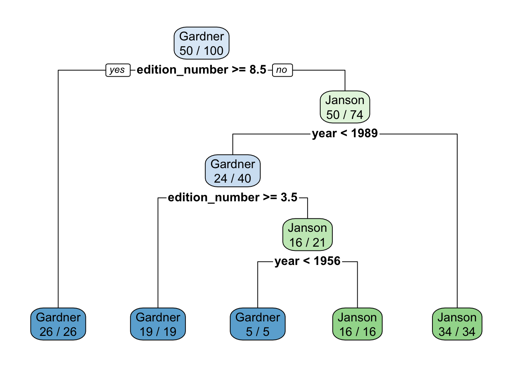
Check on the unbalanced testing data.
confusionMatrix(data = predict(fit, testing_artists),
ref = testing_artists$book, positive = "Janson")Confusion Matrix and Statistics
Reference
Prediction Gardner Janson
Gardner 942 0
Janson 0 609
Accuracy : 1
95% CI : (0.9976, 1)
No Information Rate : 0.6074
P-Value [Acc > NIR] : < 2.2e-16
Kappa : 1
Mcnemar's Test P-Value : NA
Sensitivity : 1.0000
Specificity : 1.0000
Pos Pred Value : 1.0000
Neg Pred Value : 1.0000
Prevalence : 0.3926
Detection Rate : 0.3926
Detection Prevalence : 0.3926
Balanced Accuracy : 1.0000
'Positive' Class : Janson
Here Accuracy is 1, indicating perfect accuracy.
id <- strata(training_artists, stratanames = "book", size = c(50, 100), method = "srswr")
training_artists_balanced <- training_artists |>
slice(id$ID_unit)
table(training_artists_balanced$book)
Gardner Janson
50 100 fit <- training_artists_balanced |>
train(book ~ .,
data = _,
method = "rpart",
trControl = trainControl(method = "cv"),
control = rpart.control(minsplit = 5))
confusionMatrix(data = predict(fit, testing_artists),
ref = testing_artists$book, positive = "Janson")Confusion Matrix and Statistics
Reference
Prediction Gardner Janson
Gardner 942 0
Janson 0 609
Accuracy : 1
95% CI : (0.9976, 1)
No Information Rate : 0.6074
P-Value [Acc > NIR] : < 2.2e-16
Kappa : 1
Mcnemar's Test P-Value : NA
Sensitivity : 1.0000
Specificity : 1.0000
Pos Pred Value : 1.0000
Neg Pred Value : 1.0000
Prevalence : 0.3926
Detection Rate : 0.3926
Detection Prevalence : 0.3926
Balanced Accuracy : 1.0000
'Positive' Class : Janson
Option 3: Build A Larger Tree and use Predicted Probabilities
fit <- training_artists |>
train(book ~ .,
data = _,
method = "rpart",
tuneLength = 10,
trControl = trainControl(method = "cv",
classProbs = TRUE, ## necessary for predict with type="prob"
summaryFunction=twoClassSummary), ## necessary for ROC
metric = "ROC",
control = rpart.control(minsplit = 3))fitCART
1553 samples
12 predictor
2 classes: 'Gardner', 'Janson'
No pre-processing
Resampling: Cross-Validated (10 fold)
Summary of sample sizes: 1398, 1398, 1398, 1398, 1398, 1398, ...
Resampling results across tuning parameters:
cp ROC Sens Spec
0.00000000 1.0000000 1.0000000 1.0
0.06083789 1.0000000 1.0000000 1.0
0.12167577 0.9895579 0.9374132 1.0
0.18251366 0.8653901 0.7243449 1.0
0.24335155 0.8536618 0.7073236 1.0
0.30418944 0.8536618 0.7073236 1.0
0.36502732 0.8536618 0.7073236 1.0
0.42586521 0.8536618 0.7073236 1.0
0.48670310 0.8536618 0.7073236 1.0
0.54754098 0.6689474 0.8378947 0.5
ROC was used to select the optimal model using the largest value.
The final value used for the model was cp = 0.06083789.rpart.plot(fit$finalModel, extra = 2)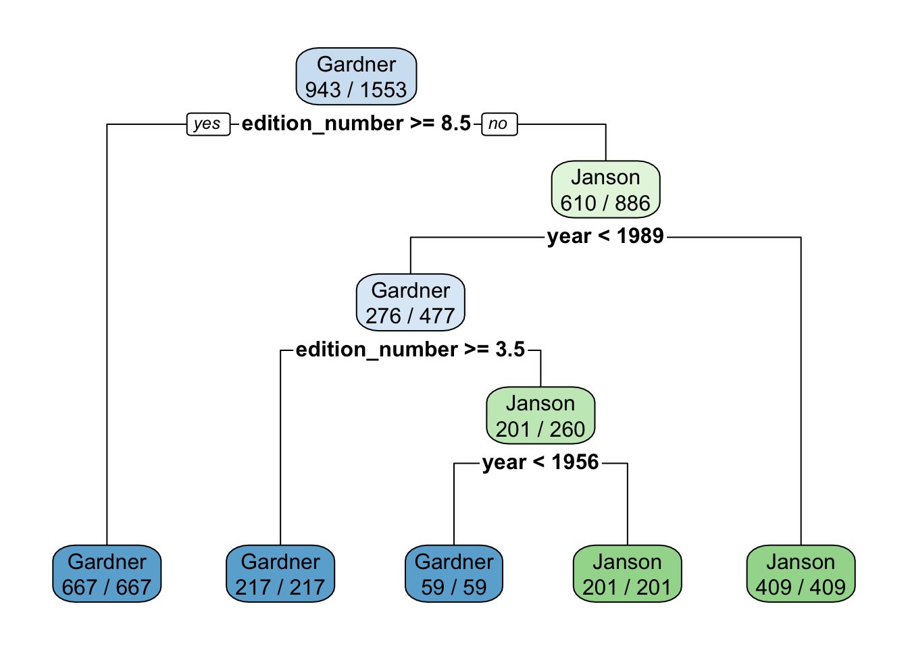
confusionMatrix(data = predict(fit, testing_artists),
ref = testing_artists$book, positive = "Janson")Confusion Matrix and Statistics
Reference
Prediction Gardner Janson
Gardner 942 0
Janson 0 609
Accuracy : 1
95% CI : (0.9976, 1)
No Information Rate : 0.6074
P-Value [Acc > NIR] : < 2.2e-16
Kappa : 1
Mcnemar's Test P-Value : NA
Sensitivity : 1.0000
Specificity : 1.0000
Pos Pred Value : 1.0000
Neg Pred Value : 1.0000
Prevalence : 0.3926
Detection Rate : 0.3926
Detection Prevalence : 0.3926
Balanced Accuracy : 1.0000
'Positive' Class : Janson
Create A Biased Classifier
prob <- predict(fit, testing_artists, type = "prob")
tail(prob) Gardner Janson
1546 0 1
1547 0 1
1548 0 1
1549 0 1
1550 0 1
1551 0 1pred <- as.factor(ifelse(prob[,"Janson"]>=0.01, "Janson", "Gardner"))
confusionMatrix(data = pred,
ref = testing_artists$book, positive = "Janson")Confusion Matrix and Statistics
Reference
Prediction Gardner Janson
Gardner 942 0
Janson 0 609
Accuracy : 1
95% CI : (0.9976, 1)
No Information Rate : 0.6074
P-Value [Acc > NIR] : < 2.2e-16
Kappa : 1
Mcnemar's Test P-Value : NA
Sensitivity : 1.0000
Specificity : 1.0000
Pos Pred Value : 1.0000
Neg Pred Value : 1.0000
Prevalence : 0.3926
Detection Rate : 0.3926
Detection Prevalence : 0.3926
Balanced Accuracy : 1.0000
'Positive' Class : Janson
Plot the ROC Curve
library("pROC")
r <- roc(testing_artists$book == "Janson", prob[,"Janson"])r
Call:
roc.default(response = testing_artists$book == "Janson", predictor = prob[, "Janson"])
Data: prob[, "Janson"] in 942 controls (testing_artists$book == "Janson" FALSE) < 609 cases (testing_artists$book == "Janson" TRUE).
Area under the curve: 1ggroc(r) + geom_abline(intercept = 1, slope = 1, color = "darkgrey")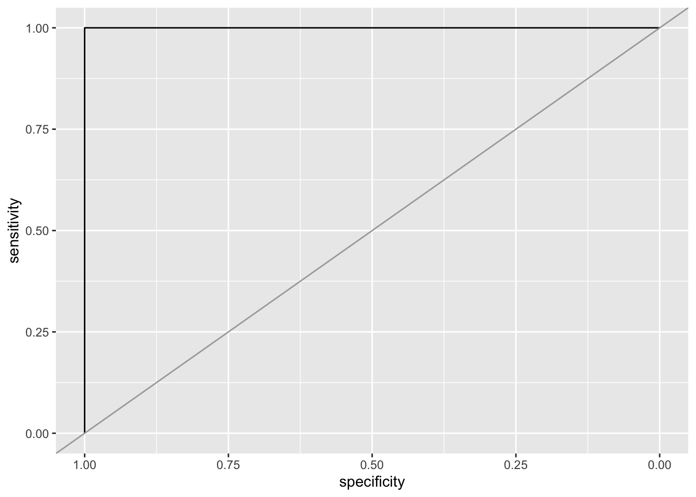
Here area under the curve is 1 creating the perfect diagonal, indicates perfect classification.
Option 4: Use a Cost-Sensitive Classifier
cost <- matrix(c(
0, 1,
100, 0
), byrow = TRUE, nrow = 2)
cost [,1] [,2]
[1,] 0 1
[2,] 100 0fit <- training_artists |>
train(book ~ .,
data = _,
method = "rpart",
parms = list(loss = cost),
trControl = trainControl(method = "cv"))The loss parameter is used to specify the error costs for different classes.
fitCART
1553 samples
12 predictor
2 classes: 'Gardner', 'Janson'
No pre-processing
Resampling: Cross-Validated (10 fold)
Summary of sample sizes: 1398, 1397, 1398, 1397, 1398, 1398, ...
Resampling results across tuning parameters:
cp Accuracy Kappa
0.09672131 0.8872911 0.7755081
0.17786885 0.8222663 0.6552677
0.54754098 0.8222663 0.6552677
Accuracy was used to select the optimal model using the largest value.
The final value used for the model was cp = 0.09672131.rpart.plot(fit$finalModel, extra = 2)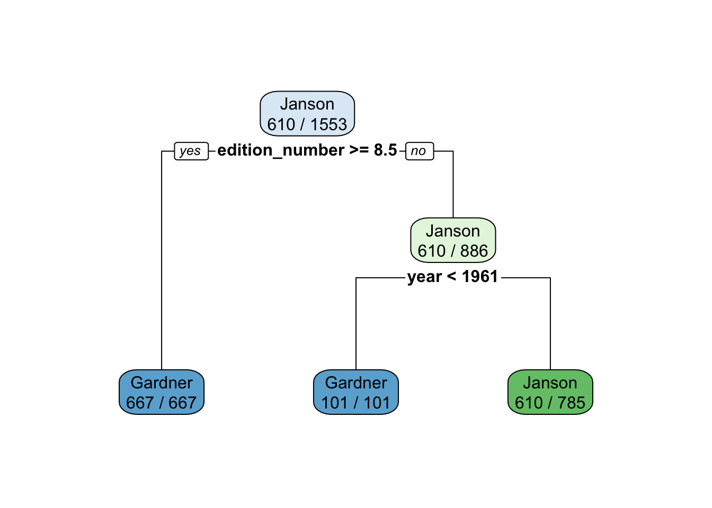
plotting the graph :
rpart.plot(fit$finalModel, extra = 2)confusionMatrix(data = predict(fit, testing_artists),
ref = testing_artists$book, positive = "Janson")Confusion Matrix and Statistics
Reference
Prediction Gardner Janson
Gardner 744 0
Janson 198 609
Accuracy : 0.8723
95% CI : (0.8547, 0.8886)
No Information Rate : 0.6074
P-Value [Acc > NIR] : < 2.2e-16
Kappa : 0.7469
Mcnemar's Test P-Value : < 2.2e-16
Sensitivity : 1.0000
Specificity : 0.7898
Pos Pred Value : 0.7546
Neg Pred Value : 1.0000
Prevalence : 0.3926
Detection Rate : 0.3926
Detection Prevalence : 0.5203
Balanced Accuracy : 0.8949
'Positive' Class : Janson